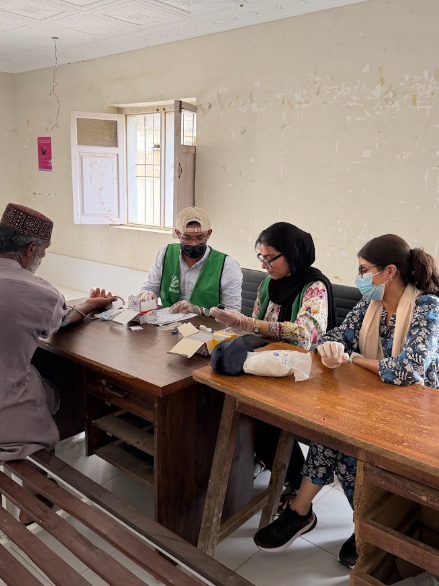
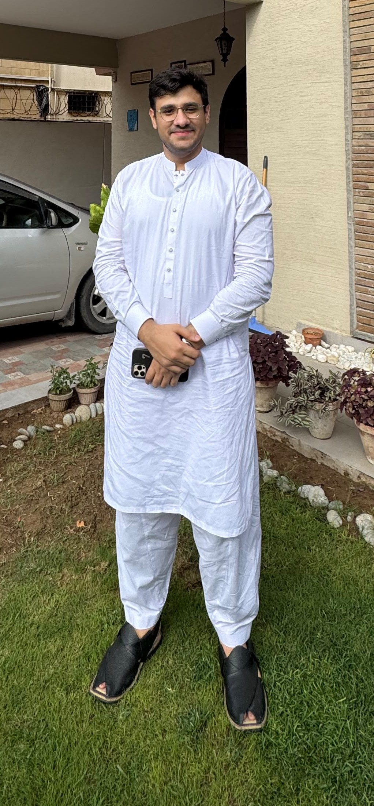

Medicine for people who can't afford to wait, and training for the students who'll be treating them next.

Revive is run by medical students, not career administrators — people who kept seeing patients leave with a diagnosis they couldn't afford to treat, and decided to do something about it. We hand out the medicine ourselves, and train the students doing it in research and the basics of keeping someone alive.
Free medication for those who need it most.
Revive Pharmacy runs out of Yasmeen Asif Sajida Arshad Pharmacy inside Creek General Hospital. Patients get their medicine there, at one of our camps, or through Zakat-funded care with DAWA Healthcare — a pharmacist checks every prescription, and the ledger is open to anyone who asks.
Life support training and medical camps.
Revive Lives is two things: the Basic Life Support workshops, taught by practising clinicians rather than senior students, and the medical camps that take screening, consultations, and medicine into neighbourhoods without a hospital nearby.
Training students to become published researchers.
Revive Research teaches the Introduction to Research and Meta-Analysis workshops, then keeps mentoring students well after the session ends — through to an actual submitted, and sometimes published, paper.

A medical student at United Medical and Dental College and an AHA-certified BLS instructor, Saad founded Revive Organisation to bring free medical care and life-saving training where it's needed most, free of cost.
A medical student at United Medical and Dental College, Dania founded Revive Organisation to bring free medical care to those who need it most — alongside running her own virtual assistant company, Synk.
Three programs, one organisation — treating patients, training life-savers, and teaching the researchers behind them.
Every rupee goes into medicine, camps, and training — nothing gets siphoned off along the way.
Donate Now